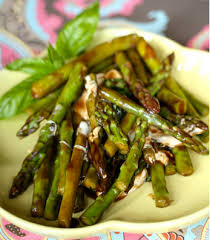

Candied Asparagus

A classic steak with a classic seasoning
This recipe has been my go to recipe the moment I found out the magic of brown sugar
If you want to take your meal to the next level this is the recipe for yoU!
Ingredients
- Oil
- 1lb of fresh Asparagus
- 1 teaspoon Ground black pepper
- 1 teaspoon Sea salt
- Garlic Powder to taste
Steps
- Cut asparagus to length (fit the pan you plan you use)
- Heat up oil
- Place asparagus in oil rotating occasionally
- Once it is to your liking add salt, pepper and garlic powder
- Add 1 tablesspoon of brown sugar
- mix until desired consistency is reached
- Enjoy